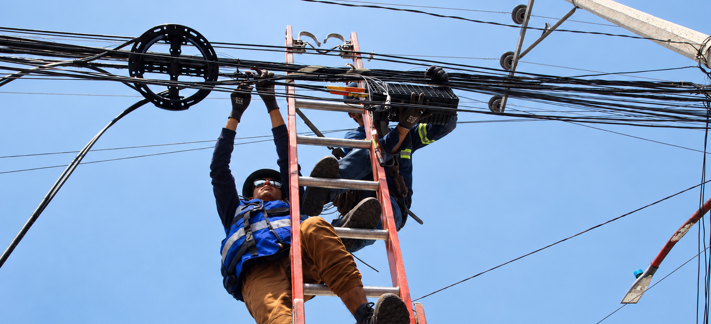

Instalaciones a clientes nuevos
Conectamos nuevos hogares para que comiencen a disfrutar de los servicios de telecomunicaciones.

 Conexión residencial · FTTH
Conexión residencial · FTTH
Instalación residencial y migración tecnológica para mantener cada conexión en marcha.

Sobre este servicio
Instalaciones residenciales y migraciones a clientes por cambio de tecnología de HFC a FTTH.
Dirigido a Operadores de Telecomunicaciones
Atención de principio a fin
Coordinamos la atención residencial y la transición de tecnología en cada etapa.
Conectamos nuevos hogares para que comiencen a disfrutar de los servicios de telecomunicaciones.
Realizamos instalaciones para clientes existentes que se mudan a un nuevo domicilio.
Migramos la conexión del cliente de HFC a FTTH, actualizando la tecnología que le brinda el servicio.
El valor de un equipo con experiencia
Agilizamos la atención de los servicios requeridos por los clientes.
La experiencia de la empresa y la certificación internacional del liderazgo respaldan la calidad de cada instalación.
SCTEInstalaciones de banda ancha